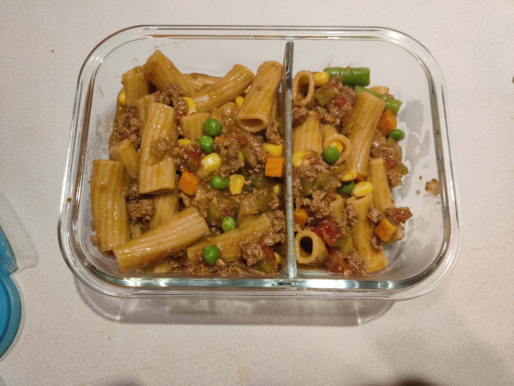

Homepage
Rotini Ranchero

Description
This dish is one of my regular meals to prep for my lunches at work.
You can substitute the ground beef for ground turkey and the corn
for any frozen veg that you prefer.
Ingredients
- 2 tbsp olive-oil
- 1 onion, diced (I like red onions but you could also use yellow)
- 1 lb ground beef
- 3 cups beef broth
- 16oz red salsa of your choice
- 1 packet taco seasoning
- 1 lb rotini/rigatoni
- 2 cups shredded Mexican cheese blend
- 8oz can diced green chilies
- 10oz frozen corn
To Serve (Optional)
- Sliced jalepenos
- Black olives, pitted and sliced
Instructions
-
On the Instant Pot, hit Saute and Adjust so it's on the More or High setting.
Pour in the olive oil and heat for about 3 minutes, then add the onion and saute
for 2-3 minutes, until softened. Add the ground beef and saute, stirring constantly,
for 2-3 minutes, until lightly browned.
-
Add the broth, salsa, and taco seasoning and stir well. Add the pasta but
do not stir- just use a spoon to lightly submerge it under the
liquid. It is okay if some pokes out above the surface.
-
Secure the lid, move the valve to the sealing position, and hit
Keep Warm/Cancel then hit Manual or Pressure Cook on High Pressure for 5 minutes.
Quick release when done.
-
Stir in the cheese and green chilies. Then, add in the corn untiil well combined
and the corn is heated through (which will be within a matter of minutes due to
the heat of the pasta).
-
Serve with sliced jalepenos, black olives, more cheese, or your favorite taco
toppings.
Homepage